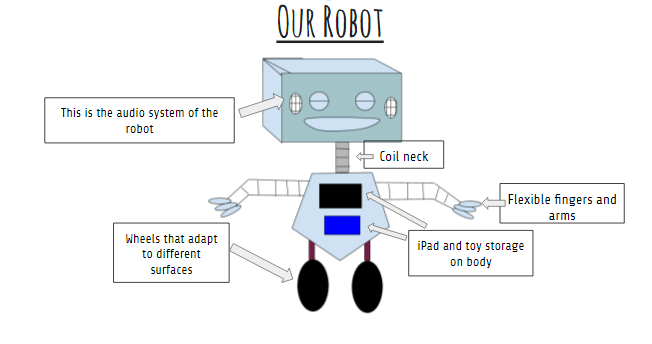

Product Explanation


Our Baby-O-Bonder 9000 is the new future of robots, and a parent's paradise. The Baby-O-Bonder plays and interacts with your baby, and comes with a camera so that you can track it. In addition, it also comes with an iPad for movies and a storage for toys. The Baby-O-Bonder's height can be regulated, and he has a coil neck and arms for flexibility. He also has wheels that adapt to many different surfaces, which include carpet, wood, grass, tanbark, gravel, and more. The Baby-O-Bonder has fully functional audio and also comes with a 16-inch TV. What makes it so unique is that it can grasp objects with its fingers, providing perfection with a baby. All of these amazing feature total up to only $5,000.99. Get the Baby-O-Bonder and your dreams will comes true.
\